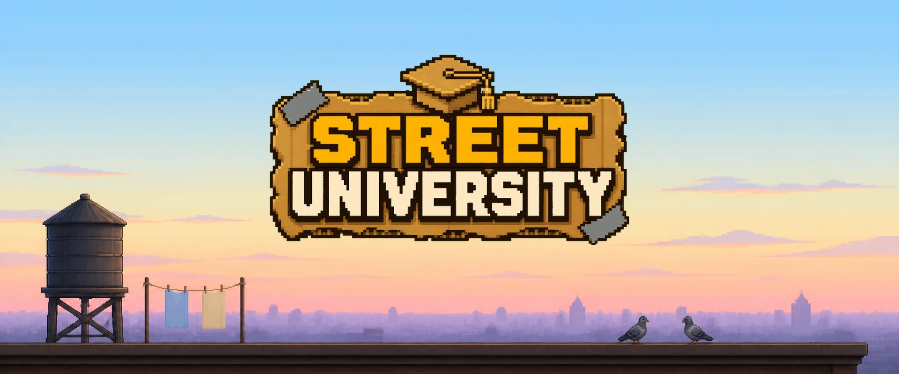

Portfolio
A game shipped by one person directing AI agents
Street University is a cartoonish top-down roguelike, in closed beta on Android and iOS. I designed it, I directed the AI agents that wrote it, and I measured the method while it was running.
1,761commits
1,101tickets tracked
88,725lines of game code
How the work flows
I decide. A first AI session splits the work into lots, two rosters of agents build them, and every lot passes a gate before it comes back to me.
Three proofs
A closed beta on both stores
Real testers install it from Google Play and from TestFlight, on their own phones.
49 releases in 22 weeks
From the first commit on 14 May 2026 to today, each release tagged and with its own changelog.
A method that is measured, not told
Rejections, costs and failed checks are counted by a script and published with everything else.
What I can do
- Take a game from an idea to a playable build on 5 platforms and in 8 languages, and through store review.
- Direct AI agents as a team: tickets, closed briefs, a gate on every lot, and a written rule for every mistake made once.
- Build the tools around the work: automated probes, a regression suite, scripts that read the cost before spending it.
- Decide from numbers, and say plainly what has not been tested.
Get in touch
Write to me, or find me on LinkedIn.